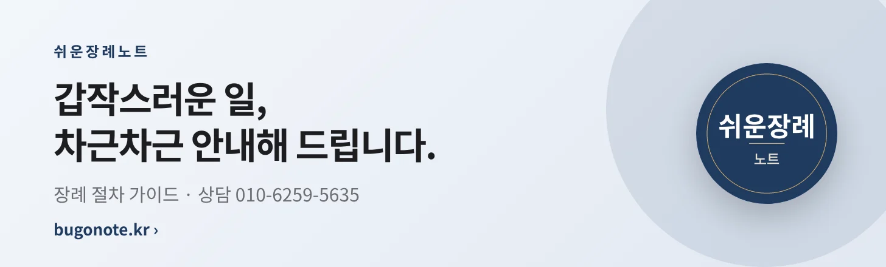

말라가 vs 라싱 산탄데르 · 승무패 확률
라리가 · 11월 8일 (일) 경기 · 통계 AI 계산
경기 요약
통계 AI는 말라가 승 40%, 무승부 24%, 라싱 산탄데르 승 36%로 계산했습니다. 가장 가능성이 높은 점수는 1-1 (10%)이고, 3골 이상 나올 확률은 64%, 양 팀이 모두 득점할 확률은 65%입니다.
통계 추정이며 결과를 보장하지 않습니다. 베팅을 권유하지 않습니다.
광고
광고맞춤 보험 설계 상담혼자서 생활하실 땐 보험이 더 필요합니다. 필요할 때 연락 주세요. · 메리츠화재 보험설계사 심경화소속사 광고 승인 완료 · 설계사 등록번호 326015191
AI 쇼핑 준비도 무료 진단내 쇼핑몰, AI 쇼핑 에이전트에게 보일까요? 무료로 진단해 보세요.
광고5060 친구·모임 만남새로운 인연, 품격 있게 시작하세요. 카카오 로그인으로 무료 가입.

광고장례 절차 안내 가이드갑작스러운 일, 차근차근 안내해 드립니다.
광고AI 패독 영상 분석 리포트경주마의 움직임을 영상과 데이터로 읽습니다. 통계 정보 제공이며 추천·권유가 아닙니다.
광고AI 경주 통계·분석 서비스내 손안의 말박사. 통계 정보 제공이며 추천·권유가 아닙니다.